Movements of the
Earth: Rotation
and Revolution
3
Unit
Did you notice the conversation between two friends in India
and Australia? The difference in the time at two different
places and the changes in the seasons are mentioned in the
conversation. Let us examine the characteristic features of
these two phenomena that we experience in our daily lives.
Hello Shruti! Happy New Year!
Have the celebrations started there?
Oh! I forgot! Our New Year celebrations in
Australia begin earlier than in India.
Hi Rahul! Not yet! It will take five and a
half hours more for the New Year in India.
How is the weather there? Here it is
very cold and gets darker much
early in the evening.
Wonderful! It is summer here!
There will be sunlight till
around 8:00 p.m.
Fig. 3.1 l
Fig. 3.2 l
Page 43

Page 44

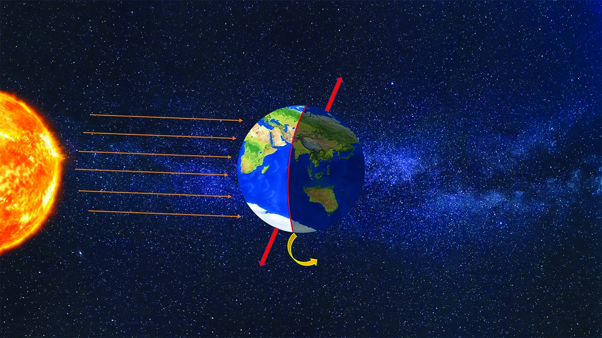


44
Social Science
Standard
From the picture we can identify that the direction of rotation
of the Earth is from the west to the east. That is why we feel
that the sun rises in the east and sets in the west.
The two main effects of the rotation of the Earth are day
and night and the Coriolis effect
Day and Night
The time taken for the Earth to complete one rotation
is 24 hours (23 hours 56 minutes 4 seconds). The Earth
receives light from the Sun. During rotation, the part of
the Earth facing the Sun has daytime and the other part
experiences night. The imaginary line that demarcates
day and night on the
Earth is called the Circle
of Illumination. It is clear
from the figure 3.4 that
this circle of illumination
is not parallel to the
Earth's axis.
Think about the condition
of day and night if the
Earth doesn't rotate!
The direction of
rotation of all planets
except the Mars and
the Uranus is from the
west to the east.
The direction of
rotation of the Mars
and the Uranus is in
the opposite direction,
that is from the east
to the west.
Mars
Uranus
Fig. 3.4l
Look at the given figure and answer the following questions related to rotation.
l direction of the Earth’s
rotation
l tilt of the Earth's axis
Direction
of rotation
West
East
Inclination of
the axis
23½0
Fig. 3.3 l
Rotation
We have discussed rotation in earlier classes.
Page 45


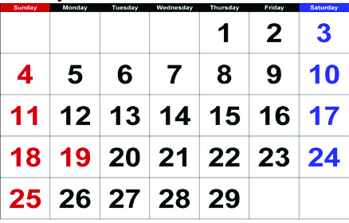
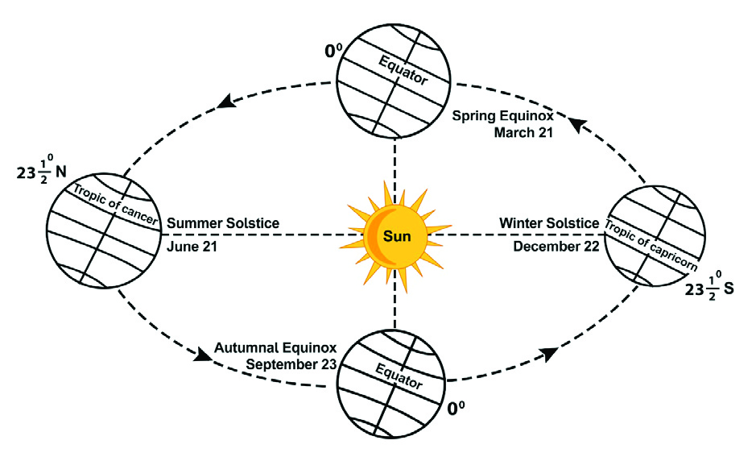
45
Movements of the Earth:
Rotation and Revolution
Revolution
Look at Figure 3.6. While rotating on
its axis, the Earth revolves around the
Sun in a fixed orbit. This is known as
Revolution. The time taken to complete
one revolution in the elliptical orbit is
365¼ days. 365 days is considered as
one year for practical convenience. The
fraction of ¼ days is added once in 4 years to the February
making it 29 days. Thus the year which has 366 days is called
a leap year.
l The Sun rises in the east and sets in the
west.
l Freely moving bodies get deflected in
their direction in both the hemispheres.
Some facts related to rotation are given below. Complete the table by
finding out the reasons behind these facts.
Fig. 3.5 l Admiral Ferrel
Fig. 3.6 l
Have you identified 2024 as a leap year from the
given calendar?
Find out five consecutive leap years after 2024.
February 2024
Coriolis Effect
Due to rotation, freely moving bodies on the Earth's surface
get deflected in their direction. The force responsible for
this deflection is known as Coriolis Force and the deflection
in direction is called Coriolis Effect.
Admiral Ferrel discovered that due to the Coriolis Effect,
ocean currents and winds change their direction in the
northern hemisphere to the right and in the southern
hemisphere to the left. This is known as Ferrel's law.
Page 46

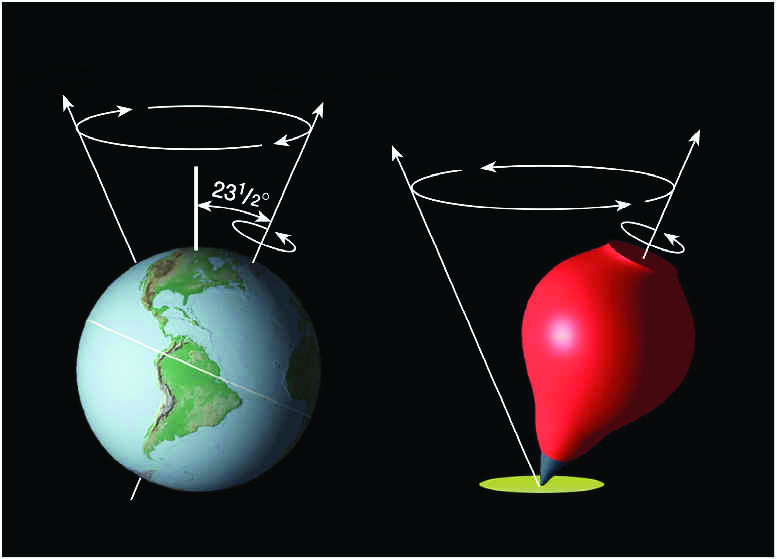
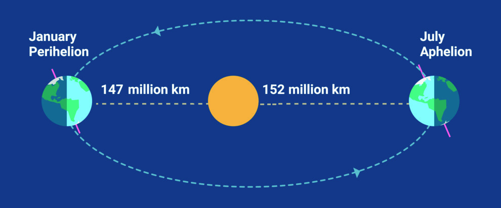
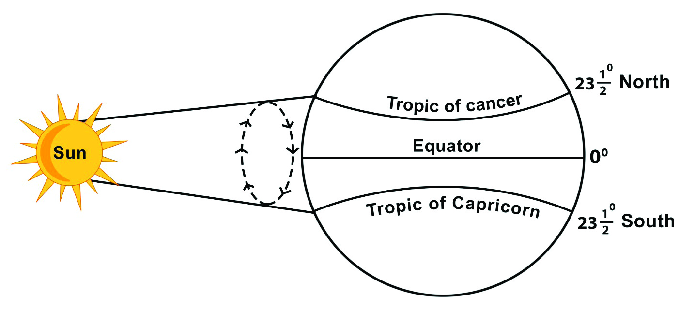
46
Social Science
Standard
Precession
lFig. 3.7
Perihelion and Aphelion
Since the Earth’s orbit is elliptical, there will be a
difference in the distance between the Earth and the
Sun. The day on which the Earth comes closest to the
Sun during revolution (147 million kilometres) is known as
Perihelion. This happens in the month of January (around
3rd January). The distance between the Sun and the Earth
will be at a maximum (152 million kilometres) in the month
of July (around 4th July). This is called Aphelion.
The speed of revolution of the Earth is around 30 km
per second. The distance between the Earth and the Sun
causes a difference in gravitational force and the speed
of revolution.
Fig. 3.8l
Apparent Movement of the Sun
lFig. 3.9
Since the tilt of the earth’s axis is maintained at an angle
of 23½0 throughout the revolution, the Sun’s apparent
position moves northward and southward between the
Tropic of Cancer and the Tropic of Capricorn. This apparent
shift in the Sun’s position is called the apparent movement
of the Sun. For this reason, the duration of day and night
also changes. Let us examine the important days on which
the Sun reaches overhead at a certain latitude during this
apparent movement.
Precession is
another movement
of the Earth like
rotation and
revolution. This is
the axial rotation of
the Earth. As given
in the picture when
the Earth takes
twenty four hours
to complete one
rotation, it takes
around 26000 years
for the Earth’s axis
to slowly complete
one circle.
Illustration for conceptual clarity of
Apparent movement. (Figure not to scale)
Page 47

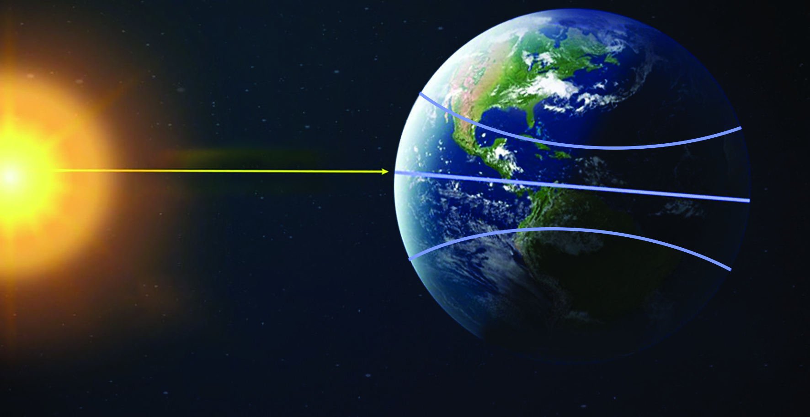


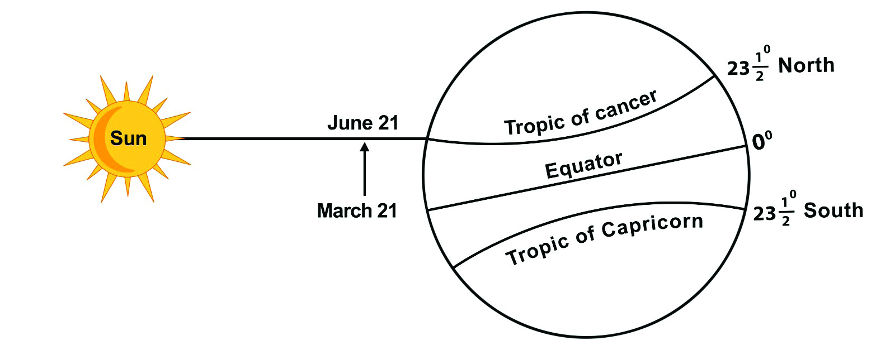
47
Movements of the Earth:
Rotation and Revolution
The Sun’s
Apparent
Position
The Sun’s position
appears to shift
between the
Tropic of Cancer
and the Tropic of
Capricorn. It is
due the tilt of the
Earth’s axis and
revolution, while
looking from the
Earth we feel that
the Sun is shifting
its position.
Tropic of Cancer
Equator
Tropic of Capricorn
21 March
23 September
23½0 North
23½0 South
00
Fig. 3.10 l
Observe the picture 3.10 and find answers
l On which latitude do the Sun’s rays fall
vertically?
l On which days does this happen?
Find out the duration of daytime at your place on 21st March and 23rd
September based on the time of sunrise and sunset given in the calendar.
Fig, 3.11 l
During the Revolution, on 21st March and 23rd September,
the sun’s rays fall vertically on the equator. The duration of
day and night will be equal on both hemispheres on these
days. These days are called equinoxes. 21st March is known
as Spring Equinox and 23rd September is Autumnal Equinox.
Look at the figure 3.6 and identify the position of the Earth
during equinoxes.
Equinox
Summer Solstice
Illustration for conceptual clarity.
(Figure not to scale)
Page 48


48
Social Science
Standard
Look at figure 3.11
l In which direction does the apparent position of the sun
shift from 21st March onwards?
l On which latitude do the sun’s rays fall vertically on 21st June?
What are the changes that happen to the length of day in the southern
hemisphere on the summer solstice (June 21)?
Latitude
Length of day
900 North
24 hours
66½0 North
24 hours
23½0 North
13 hours 27 minutes
00
12 hours
23½0 South
10 hours 33 minutes
66½0 South
Nil
900 South
Nil
Similar to the Earth and the Moon, the Sun also has two movements-
rotation and revolution. The Sun completes its rotation on its axis in
27 days. It takes around 230 to 250 million years for the solar system
including the sun to revolve around the centre of the Galaxy called
Milky Way.
Movements of the Sun
In the northern hemisphere, the Sun’s apparent position
shifts towards north from the Equator to the Tropic of
Cancer from 21st March to 21st June. As a result of this on
21st June, the northern hemisphere experiences the longest
day and the shortest night. This day is known as summer
solstice. Look at figure 3.6 and find the position of the Earth
on summer solstice.
From March to September for around six months, the Sun’s
apparent position is in the northern hemisphere. During this
period in the northern polar region, there will be continuous
daylight for six months.
The table showing the length of day in different latitudes on
the summer solstice ( June 21) is given below.
Page 49


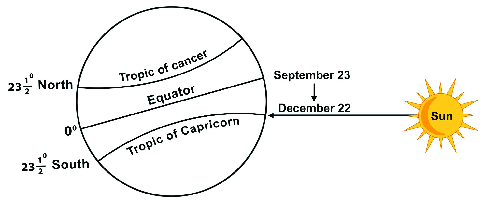
49
Movements of the Earth:
Rotation and Revolution
What will be the duration of the night in the southern polar
regions when there is daylight for six months in the northern
polar regions?
Aurora
Aurora is seen in
the polar regions
during winter months
when strong solar
winds are experienced.
Aurora is the natural
coloured light in the
atmosphere at high
latitude. It is called
Arora Borealis in the
Northern Polar
region and Aurora
Australis in the
Southern polar
region.
Fig. 3.13 l
Observe figure 3.12
In which direction does the Sun’s apparent position
shift from 23rd September onwards?
On which latitude do the Sun's rays fall vertically
on 22nd December?
Fig. 3.12 l
Winter Solstice
Latitude
Length of day
900 North
Nil
66½0 North
Nil
23½0 North
10 hours 33 minutes
In the southern hemisphere the Sun’s apparent position
shifts from the equator to the Tropic of Capricorn during
the period from 23rd September to 22nd December. As a
result of this, on 22nd December, the southern hemisphere
experiences the longest day and the shortest night. This
day is known as the Winter Solstice. Look at Figure 3.6 and
identify the position of the Earth in winter solstice.
For six months, from September to March, the Sun's
apparent position will be in the southern hemisphere.
During this period, in the northern polar region, there will
be continuous darkness for six months.
The table shows the duration of daytime in different
latitudes on the winter solstice (December 22).
Illustration for conceptual clarity.
(Figure not to scale)
Page 50


50
Social Science
Standard
00
12 hours
23½0 South
13 hours 27 minutes
66½0 South
24 hours
900 South
24 hours
What are the changes that happens to the length of the day in the
northern hemisphere on the Winter Solstice (December 22)?
Apparent Movement of the Sun
(Uttarayanam and Dakshinayanam)
Following the winter solstice (December 22) the apparent
movement of the Sun from Tropic of Capricorn (23½0 South)
to Tropic of Cancer (23½0 North) is known as the apparent
movement of the Sun towards North (Uttarayanam). The
shift in the apparent position of the Sun after the Summer
Solstice (June 21) from the Tropic of Cancer (23½0 North) to
Tropic of Capricorn (23½0 South) is known as the apparent
movement of the Sun towards South (Dakshinayanam).
Apparent
position of
the Sun
Date
Day
Northern Hemisphere
Southern Hemisphere
Length of
day
Length of
night
Length of
day
Length of
night
Equator
-----------------
Spring
equinox
will be equal
------------------------------
September 23
---------
Tropic of
Cancer
------------------
Summer
solstice
---------------
shortest
------------
longest
Tropic of
Capricorn
December 22
-------------
shortest
---------------
longest
----------------
Complete the table.
Page 51


51
Movements of the Earth:
Rotation and Revolution
Seasons
Different seasons and their characteristics.
Spring
Summer
Autumn
Winter
Fig. 3.14 l
Due to the apparent shift in the position of the Sun, different
places experience specific weather patterns. These patterns
are known as seasons. The revolution of the Earth and
variations in the availability of solar energy is the reason for
the occurrence of the seasons. The occurrence of spring,
summer, autumn and winter in a cyclical manner during a
year is called seasonal change.
spring
summer
autumn
winter
l plants bloom and
produce fruits
l during this period
duration of daytime
gradually increases
l high atmospheric
temperature
l generally longer days
l trees shed their leaves
before the arrival of
winter
l during this period
duration of daytime
gradually decreases
l low atmospheric
temperature
l snowfall
l generally longer nights
Fig. 3.15 l
Page 52


52
Social Science
Standard
Apparent movement
of the Sun
Duration
Seasons
Northern
Hemisphere
Southern
Hemisphere
l From the Equator to the
Tropic of Cancer
March 21 to
June 21
Spring
Autumn
l From the Tropic of Cancer
to the Equator
June 21 to
September 23
Summer
Winter
l From the Equator to the
Tropic of Capricorn
September 23 to
December 22
Autumn
Spring
l From the Tropic of
Capricorn to the Equator
December 22 to
March 21
Winter
Summer
Observe the table about the different seasons in northern and southern
hemispheres and write the answers for the questions given below.
Traditional
Seasons in India
Though seasons are generally classified
into four, based on the changes in the
atmospheric conditions, six different
seasons are identified in India.
l Vasantham - March, April
l Greeshmam - May, June
l Varsham
- July, August
l Sarath
- September, October
l Hemantam - November, December
l Sisiram
- January, February
l What change happens to the apparent movement of the Sun when it is
summer season in the northern hemisphere?
l What will the season be in the northern hemisphere when it is autumn in the
southern hemisphere?
l Which season is experienced in the southern hemisphere from 23rd September
to 22nd December?
l Name the season in the southern hemisphere when the Sun's apparent position
shifts from the Tropic of Capricorn to the equator.
We have discussed what causes seasonal
changes, and day and night. Now we
will get familiarised with another
characteristic feature of rotation.
Time
The figure 3.16 shows the time schedule
of the live telecast at different places
of the Spanish Super Cup Football final
match between Real Madrid and FC
Barcelona held at Barcelona on 2024
January 14.
Page 53


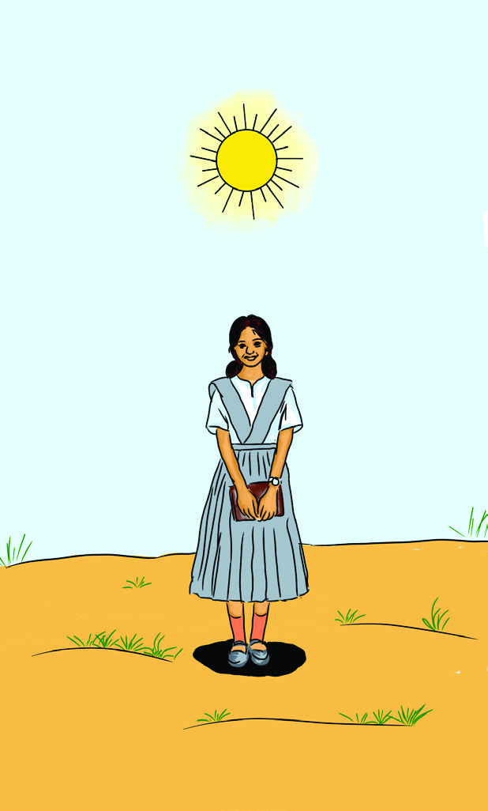
53
Movements of the Earth:
Rotation and Revolution
Fig. 3.16 l
11am
Los Angeles
1pm
Mexico
2pm
New York
4pm
Brazil
7pm
London
8pm
Barcelona
9pm
Cape Town
January
Real Madrid
FC Barcelona
January
10pm
Moscow
12.30am
Delhi
2am
Jakarta
4am
Tokyo
6am
Sydney
14
15
Fig. 3.18 l
Fig. 3.17 l
From the schedule we can see that even though
it is a live telecast, people in different parts of the
world watched the match at different times. Let us
find out the reason for this difference.
The Earth takes 24 hours to complete one rotation
or to spin 3600 on its axis. This is the time taken
to complete one rotation. If it takes 1 hour (60
minutes) to turn 150, how much time will it take to
turn 10?
150 = 1 hour
= 60 minutes
10
= 15
60
= 4 minutes
The proportionate time difference for 10 longitu-
dinal extent is 4 minutes.
Now it is clear how time is calculated at different
longitudes. We will now examine some important
concepts related to time calculation.
Local Time
In the early days, local time was calculated based
on the shadow and the overhead position of the
Sun. It was considered to be noon when the Sun
is vertically overhead. Length of the shadow is
the shortest at this time. Thus the time calculated
based on the length of the shadow and position of
the Sun is termed as the Local time.
Page 54

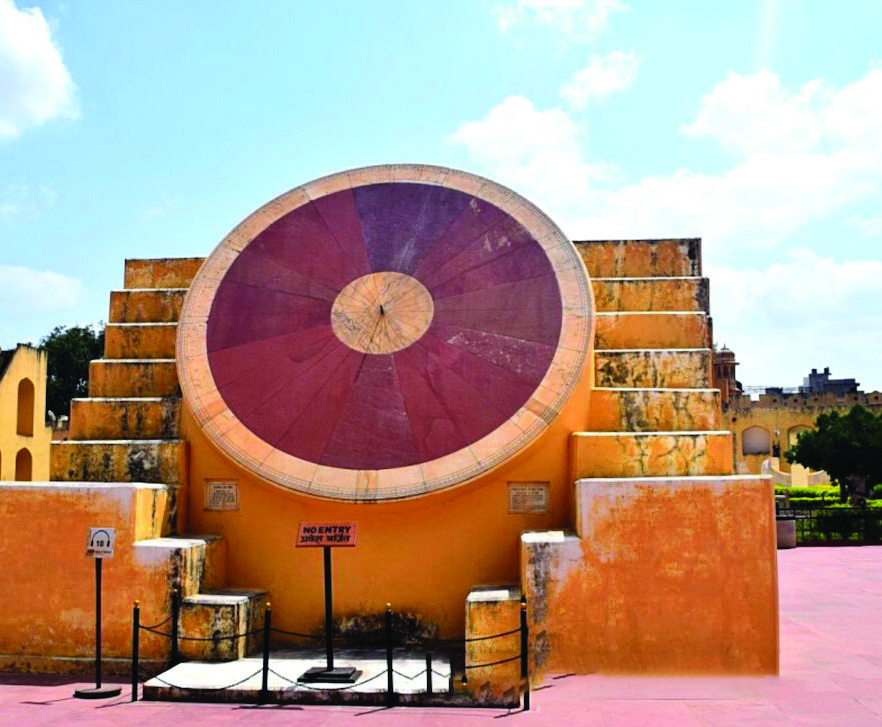
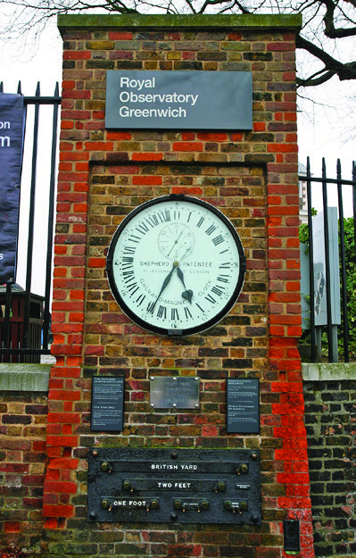
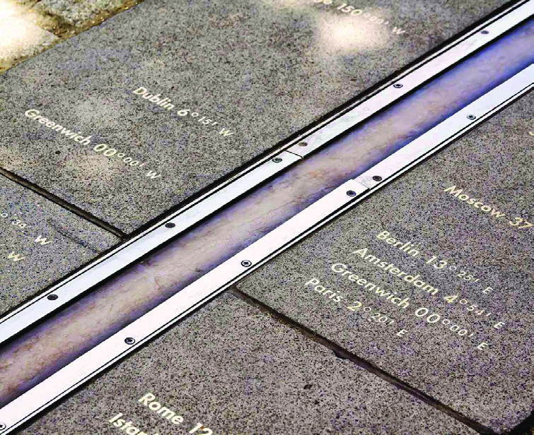
54
Social Science
Standard
Jantar Mantar is an
astronomical observation
site built in the early
eighteenth century by
Maharaja Jai Singh II in
Jaipur. Twenty important
astronomical instruments
are built here.Using these
instruments astronomical
positions could be observed
by naked eye. Of the five
astronomical sites in
India, this is the largest
and the most important
one. The other sites are in
Delhi, Ujjain, Mathura and
Varanasi. It was enlisted as
one of the World Heritage
Sites by the UNESCO in
2010. Local time could be
calculated precisely during
the early times using the
instruments here.
Jantar Mantar
Fig. 3.19 l
Standard Time
The local time at each longitude will be different.
If so, won’t there be different local times within a
country? This will create confusion for commonly
conducted examinations, railway time, radio
telecast etc. To overcome this crisis, based on
an international understanding, countries have
selected a longitude, which is a multiple of 7½0
longitude as Standard Meridian. The local time
at this Standard Meridian is considered as the
standard time of the country.
Greenwich Mean Time
You know that the size of the circles of latitude
decreases from the equator to the poles. But all
meridians of longitude are semi circles. So for
international time calculation, the longitude that
passes through the Royal British Observatory in
England is taken as zero degree meridian. This
is called Prime Meridian. The local time at Prime
Meridian is called the Greenwich Mean Time.
Travellers worldwide calculate time based on
Greenwich Time. As the rotation of the Earth is from
the west to the east, as we move each longitude
east of Greenwich, 4 minutes is added and towards
the west 4 minutes is subtracted.
Fig. 3.20 l
Page 55


55
Movements of the Earth:
Rotation and Revolution
1. What will be the time at 10 East and 10 West when it is 10:00 A.M. at
Greenwich Meridian (00 longitude)?
2. When it is 9.00 P.M. at Greenwich Meridian (00 longitude) what
will the time be at 300 East?
10 West
?
?
?
00
00
10 A.M.
9 P.M.
10 East
300 East
Fig. 3.21 l
What is the time difference between Greenwich Meridian (00 longitude)
and Indian Standard Meridian (82½0 East) ?
Time zones
Based on international understanding, the world has been
divided into 24 zones with 1 hour difference. These are time
zones. Each time zone has 150 longitudinal distance.
Indian Standard Time
Let us find out how the standard time in India
is calculated. There is around 300 longitudinal
difference between India’s easternmost state
of Arunachal Pradesh (970.25 East) and the
westernmost state of Gujarat (680.7 East). So
there is almost two hours of difference in the
local time of these places. To avoid the practical
difficulty caused by this, a standard time has been
fixed for the country. The 82½0 East longitude
which is a multiple of 7½0 longitude is selected
as the Standard Meridian of the country. The
local time at this Standard Meridian is taken as
the Standard Time of India.
INDIA
Page 56
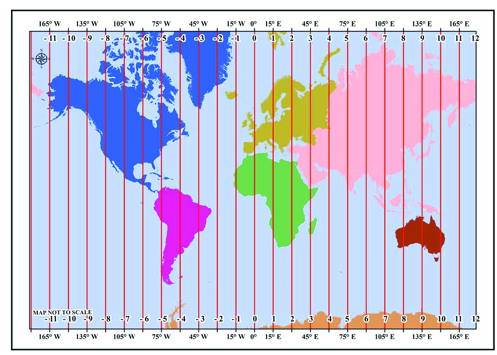
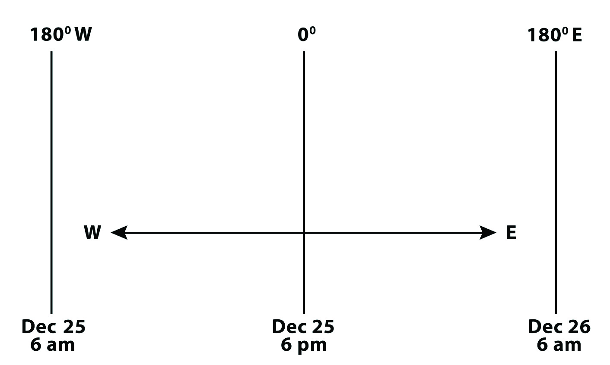
56
Social Science
Standard
Fig. 3.22 l
Fig. 3.23 l
Europe
Europe
Asia
Asia
Africa
Africa
North America
North America
South America
South America
Australia
Australia
Antartica
Antartica
Oceania
Oceania
WORLD
WORLD
TIME ZONES
TIME ZONES
We have learnt that there is a time difference of about two
hours between India’s easternmost state Arunachal Pradesh
and the westernmost state Gujarat. Since this time difference
is not very large, choosing a common standard time for the
country was not difficult. But countries like Russia, the USA,
and Australia with large longitudinal extensions have many
time zones and Standard Time.
International Date Line
Page 57

57
Movements of the Earth:
Rotation and Revolution
Fig. 3.25 l
International
Date Line
Fig. 3.24 l
In Figure 3.23 what is the time and date at 1800 East and 1800
West when it is December 25 evening 6 p.m. at Greenwich
Meridian?
From Figure 3.24, we can see that the longitudes 1800 East
and 1800 West is the same longitude. So there is a time
difference of 24 hours on either side of 1800 longitude. The
person travelling towards the east loses a day while crossing
this longitude and a person travelling towards the west
gains a day.
Based on international agreement, 1800 longitude is
considered as the International Date Line. Travellers who
move westwards crossing the line add a day and the travellers
who move towards the east calculate time by deducting a day.
Page 58

58
Social Science
Standard
Extended Activities
l Observe the changes in nature during the different seasons in your locality and
note down the same in the Social Science Observation Book.
l Calculate the time duration of day and night in your place on 22nd December and
21st June based on the time of sunrise and sunset.
To avoid the situation of two different dates in countries
through which the International Date Line passes, certain
adjustments are made in this line. As shown in figure 3.25,
this line is arranged to avoid populated land areas in the
Pacific Ocean.
You have seen how the Earth’s rotation and the revolution
have influenced our lives. The different changes that
happens in nature due to these movements provide energy
and enthusiasm to our day to day activities. The changes
in the seasons and time at different places of the world
influence the socio-cultural life of the people.